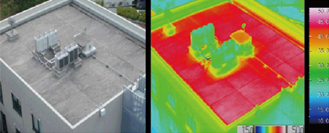

개요
옥상에 식재기반을 간결한 초박형으로 조성하여 잡초의 자연고사를 유도하며 제로소일에 의한 단열, 방음효과가 증대된 새로운 방식의 무관리 옥상녹화 시스템
옥상녹화 효과
옥상녹화 적외선 온도 측정

비녹화 지붕의 표면온도 : 40-50˚ 이상

녹화된 지붕의 표면온도 : 25-30˚ 이하
환경적 효과
- 대기질 개선 등 도시환경 개선
- 도시 열섬 현상 완화 - 옥상 녹화로 도시 기온 5℃ 저감 가능
- 도심 속 소음 경감 - 토심 10㎝ 옥상 녹화 시 소음 20㏈ 감소
- 도시 홍수 예방 - 100㎡ 당 200~300ℓ 빗물 저장
경제적 효과
- 건축물의 단열효과를 통한 냉난방비 절약 - 옥상 녹화로 냉난방에너지 16.6% 절감
- 산성비, 자외선 등으로부터 건축물 보호 - 지붕 방수층 기대수명을 40년 이상까지 연장
* 자료 : 和歌山大学ツステム工学部 環慶ツステム工学科 助敎授 山田宏之